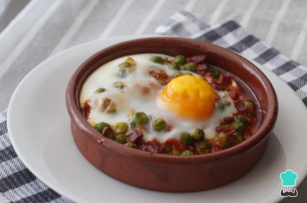

¡Bienvenidos a este espacio! Cada semana estaremos compartiendo recetas de la provincia de Andalucía.
En esta oportunidad los deleitaremos con unos deliciosos huevos a la flamenca.
Huevos a la flamenca

Ingredientes
Vamos a necesitar:
2 unidades de huevos
100 gramos de guisantes
100 gramos de tomate frito
50 gramos de chorizo
80 gramos de jamón
1 chorro de aceite de oliva
Paso a paso
Pon un cazo a calentar con agua y, cuando empiece a hervir, añade los guisantes. Déjalos hasta que estén tiernos. Los guisantes pueden ser de lata, frescos o congelados.
Corta el chorizo y el jamón en taquitos pequeños. Pon una sartén con muy poco aceite, añade el chorizo y el jamón y saltea a fuego medio.
Cuando estén los guisantes cocidos, escúrrelos bien. Una vez hayas salteado el chorizo y el jamón, añade los guisantes, déjalos cocinar unos minutos para que cojan los sabores. Añade el tomate frito y vuelve a dejar unos minutos. Cuando se hayan mezclados todos los sabores, apaga.
Coge las cazuelitas de barro y reparte el sofrito entre ellas.
Pon las cazuelitas en la bandeja de horno. Añade una cucharada de tomate frito en medio de cada cazuelita. Es opcional, pero al meterlo al horno se secará más, así que con un poco más de tomate quedará más jugoso.
Añade un huevo en cada cazuela. Rómpelos en un bol aparte para asegurarte de que están buenos y añádelos luego a las cazuelitas. Mete la placa al horno a 180 ºC y déjala hasta que los huevos estén cocidos. El punto de cocción de los huevos será como te guste más, muy hechos o poco. Lo mejor es apagar el horno cuando la clara de huevo ya empiece a estar blanca. ¡Tus huevos a la flamenca estarán listos para comer!
Como "cada maestrito tiene su librito", te dejamos otra versión del plato:
Y si te olvidaste dónde queda esta provincia, no te preocupes, acá va una ayudita: